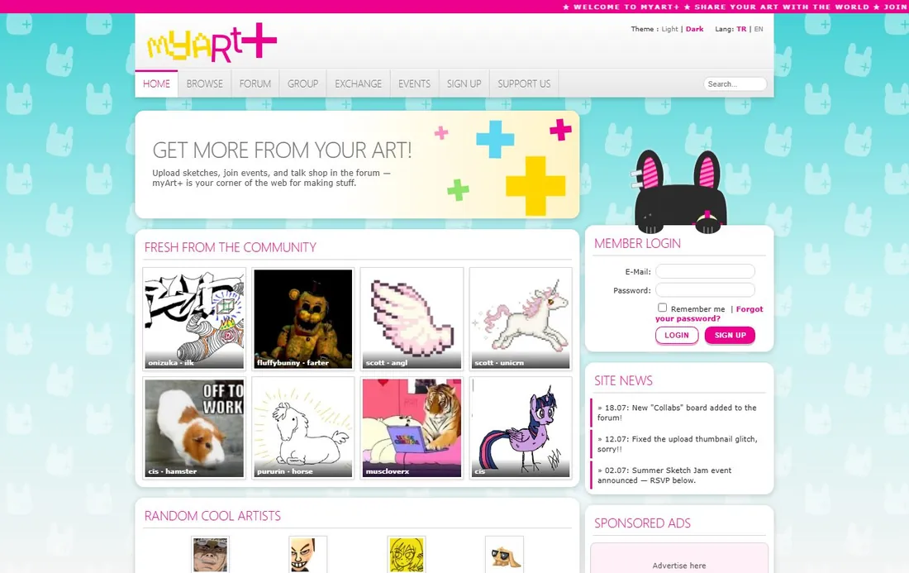
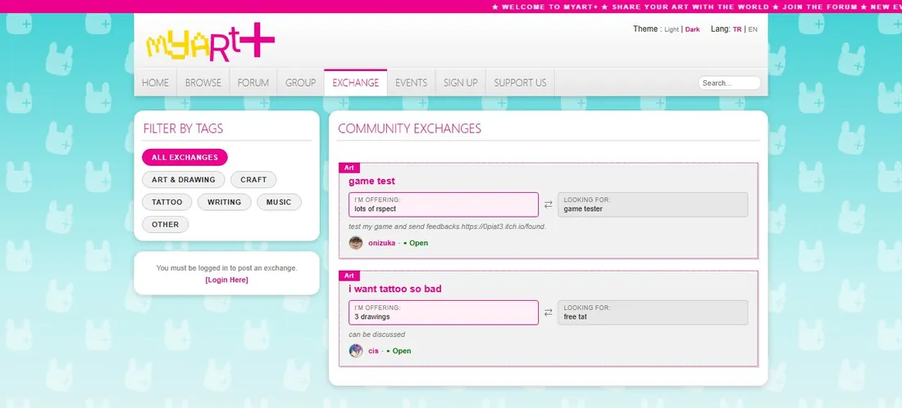

(1)
myArt+
Sanatçılar için sıfırdan, tek başıma kurduğum 40+ sayfalık topluluk platformu.
- Çerçevesiz saf PHP 8 ve MySQL; sohbet ve paneller jQuery/AJAX ile canlı
- 19 kategorili galeri, forum, grup sohbeti, RSVP'li etkinlikler, takas panosu
- Komisyon siparişleri ve değerlendirme, dosya ekli özel mesajlaşma, bildirimler
- Raporlama, moderasyon ve yedek indirme dahil admin paneli
- Özelleştirilebilir profiller, Türkçe/İngilizce, açık/koyu tema; tasarım da benden